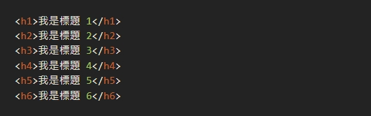

什麼是 Headings？
這個最重要的標題，在網頁的語言 HTML中，我們稱為最重的標題 Headings 1，其 HTML 語法就是 < h1 >，當中的【h】是代表【Headings】的簡稱。
他們是 6 兄弟，排序分別是由最重要的 < h1 > 至最不重要的 < h6 >他們在一篇文章中發揮不同的功用和排版的美化作用。
定義和用法
< h1 > 到 < h6 > 標籤用於定義 HTML 標題，< h1 > 定義了最重要的標題和 < h6 > 定義最不重要的標題

Headings 重要嗎？
這個是非常重要的觀念，但新手又常常會亂用和攪混淆的基本知識，Google 搜尋引擎透過解讀 HTML 中的標題，確認您網站的文章結構是否完整，由於搜尋引擎是機器和演算法，他們不像我們人類用肉眼一秒就能分辨什麼是標題，什麼是內文。所以除了讓文章的可閱讀性提高，正確的 < h1 > 到 < h6 > 標籤使用是站長的必修課題，值得您花一點時間去理解。
如何正確地使用 Headings 標題語法？
每篇文章只用一個 < h1 >
這是一個非常核心的觀念，WordPress 的文章，預設情況就會把 Title 設定為 < h1 >，Title 就是最開始您輸入文章標題的地方，那個是【唯一】要應用 h1 的地方，所以正常來說，只要您不要在其他地方使用 h1 即可。Google 搜尋的網址結果會以 h1 作為標準，直接顯示在瀏覽器的搜尋結果之中，所以這是非常重要。。
< h2 > 是最常用的標題
h2 是一篇文章使用最多的標題語法，開始撰寫文章用 h2 就對了，一般情況一篇 2000 字左右的文章都應該可以應付得來。單單使用 h2 標題 + 內文，已經算是一篇標準合格的文章結構，這應該不難理解吧？
< h3 > 是輔助為主
如果文章在 2000 ~ 5000 字數左右，單單使用 h2 是不足夠的，這時候就要出動 h3 的標題語法。在外觀上 h3 會比 h2 顯得略為細小，這概念適用在 h4 ~ h6，意思是 h1 的外觀是最大，但 h6 的外觀大小是細。h3 的作用開始需要比較有技巧，把 h2 的段落，分折成更細小的短句。
< h4 > 較常出現在側邊欄
由於在【 側邊欄 Side Bar】和網站的【底部 Footer】的位置，也有需要標題的出現位置，但又不能太搶主角的眼球，所以比較常見 h4 和 h5 的蹤影。h4 通常配合各種小工具而出現，但隨著移動裝置的流行，側邊欄的重要性和角色會慢慢被淡化，大家可能會減少看到 h4 的出現率。
< h5 > 有機會在網站底部
h5 就是配合 h4 的存在，一般人單從外觀也很難分辨這兩者的差異，這因應不同的 WordPress 佈景主題而異，可能相差 2 px ~ 6 px，通常充當配角的任務，在新聞雜誌版形可以有較大發揮空間很多時 h5 的工作，其實由 h4 來擔任就好了，存在感很低的標題語法。
< h6 > 的出場率非常低
h6 的作用，可以說是非常的低，有時候可以在維基百科的 【註腳 Footer Note】之類可以看到，版本聲明的部分也有機會是使用 h6。就是用在不太重要的事情上，貼切一點的說法，就是配角群中裡面的配角。